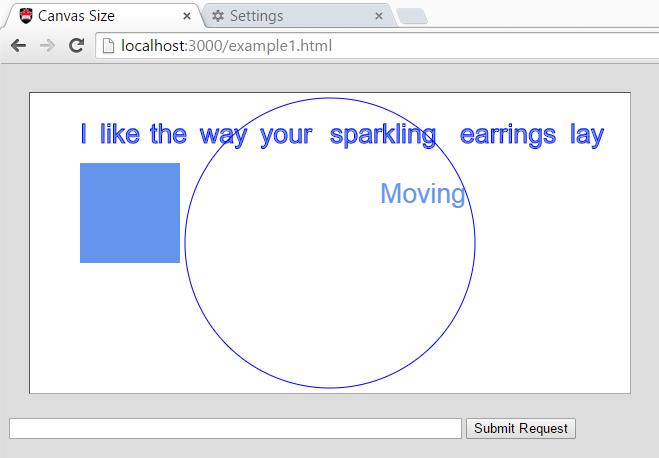
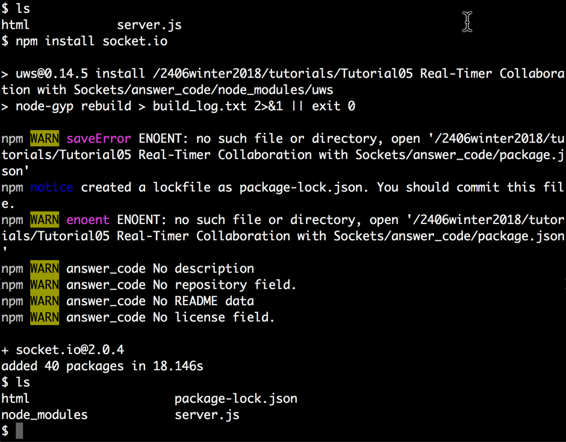
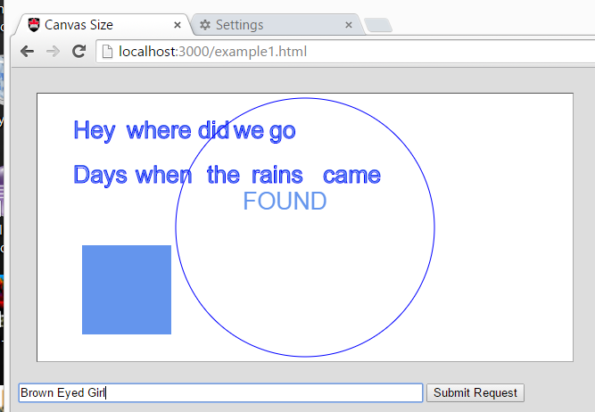

COMP 2406 - Winter 2019 Tutorial 5
Real-Time Collaboration with Sockets
© L.D. Nel 2019
Revisions will be noted here
Description:
The purpose of this tutorial is to get you working using npm's socket.io and web sockets to implement a real-time collaborative application. The work you do in this tutorial will form a major part of what is needed for Assignment 3. This introduces the use-base where the server can send data to the client that is not in direct response to a request from that client.
The demo code provided for you implements the collaborative app based on polling (each client keeps asking the server over and over and over for updated information.) Polling is simple to implement but expensive (lots of network traffic) and often not very practical. Here we want to refactor the code to use web sockets instead. Refactoring means to change the internal structure of code without changing what it does. In particular, we will use the socket.io npm module that is very popular for this purpose. This will be our first npm module that is not part of node.js itself.
This will also be our first example of asynchronous communcation between client server. That is, the server can send a message to the client without it being in response to request from that client. All the previous tutorials and assignments have used a simpler request-response model where the server can only "talk" to the clients in response to a request.
There is not a lot of code to write for this tutorial but there is quite a lot to understand before you can do so. Study the demo code carefully until you are thoroughly familiar with it before you start your refactoring. You will definely have to start this ahead of the actual tutorial session. The answer code you write will be based on the socket-based chat servers presented in the course notes: Real-Time Collaboration with Web Sockets.
IMPORTANT: This tutorial is meant as a homework assignment and for you to demonstrate your results at your tutorial session. You will not be able to complete it if you only start when you come to the tutorial. You will need to learn some basics of javascript on your own and come up with a strategy to solve the problems.
To get credit for the tutorial you must complete, or make significant progress on, the exercise problems provided and demonstrate your results to the tutorial TA before you leave the tutorial.
Preliminary:
Open the the demo_code folder and run the server found there. It has an accompanying html folder from which it will serve the client-side html and javascript files. When the browser requests http://localhost:3000/canvasWithTimer.html you should see a browser application that looks familiar by now.

To test the app you need to open several browser windows to the same location. Open two or three browser windows to this location and notice the following.
You can drag the words around with the mouse on any given client but that will not be part of this exercise.
You can use the arrow keys to move the blue box around. When you do it also moves in all the other browser clients. This happens because all the clients are continously asking the the server where the blue box is. This code is using polling and it's not a good solution for real-time collaboration.
Locate the function pollingTimerHandler() in the client-side javascript. Figure out how it works then proceed with the problem exercises.
In the course notes there is an example chat server implemented with sockets using the npm socket.io module. You should use that code as a model and refactor this polling-based application to use socket.io as well.
Problem 1)
In order to implement a solution using socket.io we need to install the npm socket.io module. Open a terminal to the same directory as your server.js code and execute:
npm install socket.io
A node_modules directory will be created as a result. This is our first example of installing a module that is not built into node.js itself. (During installation things will seem to pause but just wait it out until it finishes. There might be some warnings as well which we should be able to ignore. Finally a package-lock.json might be created depending on which version of npm you are running; again ignore that for now.

[By the way. If you change the folder name where your static files are stored you will need to delete the node_modules directory and re-install the socket.io module.]
Problem 2)
Modify server.js organization to resemble that of the socket.io based chat application in the notes. Here we are just setting the server up to make it easier to use socket.io but it won't be using the sockets yet. The code might look something like this. Notice we've made the http server callback a separate handler function:
const app = require('http').createServer(handler)
const io = require('socket.io')(app) //wrap server app in socket io capability
const fs = require("fs") //need to read static files
const url = require("url") //to parse url strings
const PORT = process.env.PORT || 3000
app.listen(PORT) //start server listening on PORT
//...
function handler(request, response) {
//...
}
Launch the server and verify that the application still works. It will still be using polling but at least it's set up to incorporate sockets more easily.
Problem 3)
Now for the main part. Implement the server-side socket code to expect the blue box data to arrive at the socket and to broadcast that data to everyone who is connected.
io.on('connection', function(socket){
socket.on('blueBoxData', function(data){
console.log('RECEIVED BOX DATA: ' + data)
//to broadcast message to everyone including sender:
io.emit('blueBoxData', data) //broadcast to everyone including sender
})
})
At this point you can remove all the handling of the box data in the handler() function as it won't be needed anymore.
Add the script to canvasWithTimer.html that requests the client-side socket.io.js javascript:
<script src="/socket.io/socket.io.js"></script>
Add the javascript in canvaWithTimer.js to create the client-side socket:
//connect to server and retain the socket
let socket = io('http://' + window.document.location.host)
//let socket = io('http://localhost:3000')
socket.on('blueBoxData', function(data) {
console.log("data: " + data)
console.log("typeof: " + typeof data)
let locationData = JSON.parse(data)
movingBox.x = locationData.x
movingBox.y = locationData.y
drawCanvas()
})
Finally modify everwhere in cavasWithTimer.js where the client uses a POST message to send the blue box data to the server to use the socket instead. For example replace:
//update the server with a new location of the moving box
$.post("positionData", jsonString, function(data, status) {
//...
})
with
//update the server with a new location of the moving box
socket.emit('blueBoxData', jsonString)
When making these changes be mindful of whether JSON or just plain text is being passed between the client and server. It should be JSON strings representing the blue box location. (If you are unsure print the data object to the console to see what it is.)
When you have completed all these changes you should be able to move the blue box in one browser with the arrow keys and watch on another browser as the box moves along in a synchronized fashion.
Congratulations this is a major refactor. The code is no longer using the inefficient polling strategy. The animation probably looks better, but more important you would now be able to handle much more complex collaboration that would not be possible with polling.

When you have completed these three problems demonstrate your work to the tutorial TA to get credit for the tutorial.